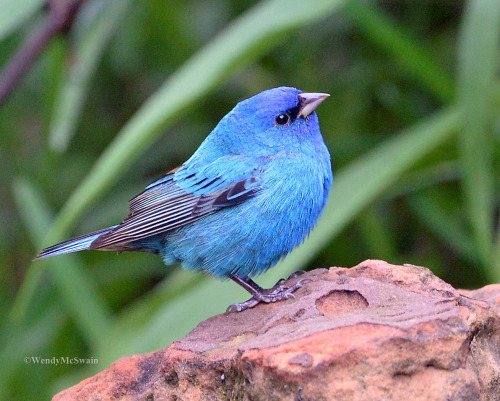

Nos commodius agimus. non enim solum Torquatus dixit quid sentiret, sed etiam cur. Ego autem arbitror, quamquam admodum delectatus sum eius oratione perpetua, tamen commodius, cum in rebus singulis insistas et intellegas quid quisque concedat, quid abnuat, ex rebus concessis concludi.
Contra quos omnis dicendum breviter existimo. Quamquam philosophiae quidem vituperatoribus satis responsum est eo libro, quo a nobis philosophia defensa et collaudata est, cum esset accusata et vituperata ab Hortensio. qui liber cum et tibi probatus videretur et iis, quos ego posse iudicare arbitrarer, plura suscepi veritus ne movere hominum studia viderer, retinere non posse. Qui autem, si maxime hoc placeat, moderatius tamen id volunt fieri, difficilem quandam temperantiam postulant in eo, quod semel admissum coerceri reprimique non potest, ut propemodum iustioribus utamur illis, qui omnino avocent a philosophia, quam his, qui rebus infinitis modum constituant in reque eo meliore, quo maior sit, mediocritatem desiderent.
Iis igitur est difficilius satis facere, qui se Latina scripta dicunt contemnere. in quibus hoc primum est in quo admirer, cur in gravissimis rebus non delectet eos sermo patrius, cum idem fabellas Latinas ad verbum e Graecis expressas non inviti legant. quis enim tam inimicus paene nomini Romano est, qui Ennii Medeam aut Antiopam Pacuvii spernat aut reiciat, quod se isdem Euripidis fabulis delectari dicat, Latinas litteras oderit?
Summer is almost here and we are waiting for that time of the year when we can cook outdoors, eat cherries at its best and enjoy a family meal until late in the day. To celebrate the joy for the coming season, our team has curated a gallery with some great photos of food and summertime moments. Be sure to check out the whole gallery on Flickr and feel free to add your own favorite pictures in the comments section.
Ego autem quem timeam lectorem, cum ad te ne Graecis quidem cedentem in philosophia audeam scribere? quamquam a te ipso id quidem facio provocatus gratissimo mihi libro, quem ad me de virtute Sed ex eo credo quibusdam usu venire; ut abhorreant a Latinis, quod inciderint in inculta quaedam et horrida, de malis Graecis Latine scripta deterius. quibus ego assentior, dum modo de isdem rebus ne Graecos quidem legendos putent. res vero bonas verbis electis graviter ornateque dictas quis non legat? nisi qui se plane Graecum dici velit, ut a Scaevola est praetore salutatus Athenis Albucius.
Takani blog(с)2015
Add a Comment